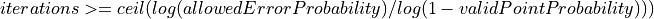

5.6. Fitting Filters
Summary: |
Plugin with fitting algorithms. |
Type: |
Algorithm |
License: |
licensed under LPGL |
Platforms: |
Windows, Linux |
Author: |
M. Gronle, ITO, University Stuttgart |
5.6.1. Overview
This plugin contains algorithms for fitting planes and other two dimensional polynomials to dataObjects mainly using the method of least-squares. Some of the included algorithms can also be called with weighted values, such that more precise fitting results are achievable.
Furthermore this plugin also contains methods to finally subtract or reconstruct the fitted surfaces.
These filters are defined in the plugin:
5.6.2. Filters
Detailed overview about all defined filters:
- itom.algorithms.fillInvalidAreas(inputObject, outputObject[, method, regionType, regionExtend, maxAreaSize, validPointProbability, allowedErrorProbability, statistics])
This filter can be used to fill NaN areas in a float32 or float64 input object with interpolated values.
This filter processes independently every plane of the input object. For every plane the following steps are done:
Locate connected areas with NaN values (using OpenCVs method ‘connectedComponentsWithStats’).
For every area whose size does not exceed ‘maxAreaSize’:
depending on ‘regionType’ and ‘regionExtend’ an enlarged area around the NaN area is taken
depending on ‘method’ an interpolation plane or single value is calculated using all valid values within the enlarged area
The NaN values within the area are filled with the interpolated plane value of the interpolated scalar
RegionType
Per default, the region type is ‘BoundingBox’. Then, a rectangular bounding box is set around each area of invalid values and the size of the bounding box. is increased in all directions by the parameter ‘regionExtend’ (different value possible for horizontal and vertical extend). ‘BoundingBox’ is the fastest method, however may produce very varying results, if the shape of the areas is different from simple rectangles.
ErodeRect: Around the invalid area, an erosion is calculated with a rectangle element. The interpolation is only done with values within the eroded ribbon. The extend is the maximum horizontal and vertical distance from a edge element of the invalid area, e.g. (1,1) is a 1-pixel ribbon whose valid values are used for interpolation.
ErodeEllipse: This is the same than ‘ErodeRect’, however the element has an ellipse form and not a rectangle making the ribbon more smooth.
Method
LeastSquaresPlane: A plane is fitted into the valid values of the region using the least squares fit approach.
LMedSPlane: A plane is fitted into the valid values of the region using the approach to minimize the median of the squared distances.
Mean: A mean value of a valid values of the region replaces the invalid values within the region.
Median: A median value of a valid values of the region replaces the invalid values within the region.
Currently, the filter does not work inplace such that the output object is always a newly allocated dataObject of the same type and size than the input object.
- Parameters
inputObject (itom.dataObject) – input real-valued data object with possible NaN values (float32, float64).
outputObject (itom.dataObject) – output real-valued data object that equals ‘inputObject’ but NaN values are filled with interpolated values (float32, float64).
method (str, optional) –
LeastSquaresPlane (default), LMedSPlane (Least median of squares), Median, Mean
Match: [“LeastSquaresPlane”, “LMedSPlane”, “Median”, “Mean”], Default: “LeastSquaresPlane”regionType (str, optional) –
BoundingBox (default): a bounding box is set around each invalid area and the interpolation is done over all valid values within the bounding box. For other region types see the description of this filter.
Match: [“BoundingBox”, “ErodeRect”, “ErodeEllipse”], Default: “BoundingBox”regionExtend (Sequence[int], optional) –
The invalid region is extend by the ‘regionType’. The size of the extend in x- and y- direction is given by this parameter as tuple (dx,dy).
2 values required, Value range: [1, 2001], Default: [3, 3]maxAreaSize (int, optional) –
Only invalid area whose number of pixels is below this value are filled by interpolated values.
Value range: [1, inf], Default: infvalidPointProbability (float, optional) –
probability that 3 randomly selected point of all points only contain trustful (valid) points. (only important for leastMedianFitPlane)
Value range: [0, 0.999999], Default: 0.2allowedErrorProbability (float, optional) –
allowed probability that the fit is based on a possible outlier (non correct fit). (only important for leastMedianFitPlane)
Value range: [1e-07, 1], Default: 0.001statistics (itom.dataObject, optional) – optional dataObject (only possible if ‘inputObject’ only contains one plane). If given, the dataObject will be a float32 Mx8 dataObject where each row corresponds to one detected area. Its content is [inclusive leftmost pixel-coordinate of the area, inclusive topmost pixel-coordinate of the area, width of bounding box of area in pixel, height of bound box of area in pixel, total number of pixels in area, x-coordinate of centroid of area in physical units, y-coordinate of centroid of area in physical units, 1: area has been filled, else 0]
- Returns
numTotalInvalidAreas - total number of detected invalid areas
- Return type
- Returns
numFilledAreas - number of areas that where filled (their area size was <= maxAreaSize and the interpolation values based on surrounding pixels are valid).
- Return type
- itom.algorithms.fitPlane(sourceImage[, method, validPointProbability, allowedErrorProbability])
fits plane in 2D-dataObject and returns plane-parameters A,B,C (z=A+Bx+Cy)
This fit can be executed by different fit strategies: - leastSquareFit minimizes the sum of the squared distances of all valid points to the plane (direct solution) - leastSquareFitSVD does the same using a svd algorithm - leastMedianFit minimizes the median of the absolute distances of all valid points to the plane
The probability values are only important for the least median fit and determine the number of iterations for the a random search using the equation

- Parameters
sourceImage (itom.dataObject) – source image data object
method (str, optional) –
fitting method (leastSquareFit [default], leastSquareFitSVD, leastMedianFit)
Match: [“leastSquareFit”, “leastSquareFitSVD”, “leastMedianFit”], Default: “leastSquareFit”validPointProbability (float, optional) –
probability that 3 randomly selected point of all points only contain trustful (valid) points. (only important for leastMedianFit)
Value range: [0, 0.999999], Default: 0.2allowedErrorProbability (float, optional) –
allowed probability that the fit is based on a possible outlier (non correct fit). (only important for leastMedianFit)
Value range: [1e-07, 1], Default: 0.001
- Returns
A - Parameter A of regression plane z = A + Bx + Cy
- Return type
- Returns
B - Parameter B of regression plane z = A + Bx + Cy
- Return type
- Returns
C - Parameter C of regression plane z = A + Bx + Cy
- Return type
- itom.algorithms.fitPolynom1D_Z(data, polynoms, order[, weights, xVals, numThreads])
One-dimensional polynomial fit in z-direction for a 3D - data object.
The input data object must be three-dimensional and is internally casted to float64 (if not yet done). The resulting polynomial parameters per pixel are stored in the output data object ‘polynoms’ whose z-dimension is equal to (order+2). The first (order+1) planes contain the coefficients p0…pn and the last plane contain the pixel wise residual error.
The polynomial is y(x) = p0 + x*p1 … + x^n*pn The residual is the sum of the quadratical errors from each valid pixel to the fitted polynomial.
If no ‘xVals’ are assigned, the x-values for each plane are calculated using the offset and scale of the data-object in z-direction, such that an equally spaced vector of (0,1,2,3…) is the default.
You can additionally give a weight data object (same dimension than ‘data’) for weighting the values. NaN values in ‘data’ and weights <= 0 are ignored. If a fit cannot be done due to too less or degenerated values, NaN is returned in ‘polynoms’ at this pixel.
For a first order fit, a direct least squares solution is used which is very fast, for the other orders a system of linear equations is solved (using a SVD decomposition) which can be slower. On a multi-core processor you can assign a number of threads that are used to parallely compute the approximations for each pixel.
- Parameters
data (itom.dataObject) – input data object (3 dimensions, [z,y,x]).
polynoms (itom.dataObject) – float64, size: [(order+2),y,x]. The first (order+1) planes contain the coefficients, the last plane contains the residual error for each polynomial fit.
order (int) –
polynomial order
Value range: [1, 7], Default: 1weights (itom.dataObject, optional) – weights (same dimensions than data)
xVals (Sequence[float], optional) – x-value vector (length must be the same than z-size of data) [default: equally spaced values are assumed using scale and offset of the data object in z-direction]
numThreads (int, optional) –
number of threads used for the parallel determination
Value range: [1, 8], Default: 1
- itom.algorithms.fitPolynom2D(sourceImage, fittedImage, orderX, orderY[, replaceNaN])
Fit a polynomial p(x,y) of order (orderX, orderY) in x- and y-direction.
The fit function always looks like this:
f(x,y) = sum_{m=0}^{M} sum_{n=0}^{N} ( p_nm * x^n * y^m )
This definition is slightly different from the polynomial fitted by the similar function ‘polyfitWeighted2d’.
Puts the fitted points into the data object ‘fittedImage’. This method does not weight the input values and does not return the coefficients for the polynomial. Use polyfitWeighted2d if you want to have an enhanced fit.
- Parameters
sourceImage (itom.dataObject) – source image data object
fittedImage (itom.dataObject) – destination data object with fitted values
orderX (int) – order of the fitting polynomial in x-direction
orderY (int) – order of the fitting polynomial y-direction
replaceNaN (int, optional) –
if 0 infinite values in input image will be copied to output
Value range: [0, 1], Default: 0
- Returns
sigma - Variance value sigma of polynomial fit.
- Return type
- itom.algorithms.getInterpolatedValues(dataObj, coordsSubPix[, searchRect, method, validPointProbability, allowedErrorProbability])
returns the linearly interpolated values of a given input dataObject at specific 2D point coordinates.
The given input data object must be a real valued object with two dimensions or a region of interest that only contains one plane (e.g. 1xMxN). The point coordinates (coordsSubPix) is a Nx2 floating point data object where each row is the row and column coordinate (sub-pixel) of the desired value. The values must be given in the coordinates of the data object (scale values). The resulting interpolated values are returned as ‘values’ list. The input data object is allowed to contain non-finite values.
For the interpolation a search rectangle whose height and width is given by ‘searchRect’ is centered at the rounded coordinate and a plane is robustly fitted into the valid values that lie within the rectangle. The value is then determined using the coefficients of the fitted plane. Infinite values are ignored for the determination of the plane. The plane is calculated by least-squares fit. If the rectangle exceeds the boundaries of the given matrix, it moved inside of the matrix such that the searched coordinate still lies within the rectangle. If this is not possible, NaN is returned as value.
- Parameters
dataObj (itom.dataObject) – input real-valued data object (2D or ROI containing only one plane).
coordsSubPix (itom.dataObject) – input Nx2 data object containing the sub-pixel (column,row) coordinates of each point (given in scale value of dataObj).
searchRect (Sequence[int], optional) – [height, width] of the search rectangle for the linear interpolation. A plane fit is executed for all finite values within the rectangle and the output value is determined based on the plane coefficients. If the size if even, its size drifts towards the trend direction given by the coordinate value.
method (str, optional) –
LeastSquares (default), LMedS (Least median of squares)
Match: [“LeastSquares”, “LMedS”], Default: “LeastSquares”validPointProbability (float, optional) –
probability that 3 randomly selected point of all points only contain trustful (valid) points. (only important for leastMedianFit)
Value range: [0, 0.999999], Default: 0.2allowedErrorProbability (float, optional) –
allowed probability that the fit is based on a possible outlier (non correct fit). (only important for leastMedianFit)
Value range: [1e-07, 1], Default: 0.001
- Returns
values - output vector of type ito::float64 containing the interpolated values (NaN if no value could be found)
- Return type
Sequence[float]
- itom.algorithms.polyfitWeighted2D(inputData, orderX, orderY[, weights, reduceFactor])
This method fits a two-dimensional polynomial of given order in x- and y-direction to the data ‘inputData’.
For the fit, the optional scale and offset values of the input data object are considered. The fit is executed in double precision, such that the input is converted to float64 (if not yet done). NaN values in the input data object are ignored. Optionally, you can give a weighting data object (needs to have the same dimension and size than inputData) such that the values are weighted with the values of the data object ‘weights’. Values with corresponding weights <= 0 are ignored as well.
Depending on the orders, the fitted polynomial, whose coefficients are returned by this filter, has the following form:
if (orderX <= orderY):

else:
The coefficients p_ij are stored in the coefficients vector in the order they appear in the equation above.
The solver uses a Vandermonde matrix V as solving strategy and tries to solve V*p=Z, where Z are the valid values of the input data object. The overdetermined system of linear equations is finally solved using a QR factorization of V. If this module is compiled with LAPACK, its solvers are used, else the solve-command of OpenCV (slower) is called. In order to speed up the calculation you can use the parameter ‘reduceFactor’. If it is set to any value >= 1, The input plane is divided into a grid of (orderY+1)*reduceFactor x (orderX+1)*reduceFactor rectangles. In every rectangle an arbitrary valid value is selected and used for the determination only. If no valid value could be found after a certain number of new random values, no value is taken from this rectangle. The algorithm returns an error if less values could have been selected than are needed for the fit of given orders.
The definition of the polynomial function is slightly different than the one used in the similar fitting function ‘fitPolynom2D’.
- Parameters
inputData (itom.dataObject) – input data object, the fit is based on the regular grid (x,y) defined by the scaling and offset of this data object
orderX (int) –
polynomial order in x-direction
Value range: [0, 1000], Default: 2orderY (int) –
polynomial order in y-direction
Value range: [0, 1000], Default: 2weights (itom.dataObject, optional) – weights, if not given all values are equally weighted
reduceFactor (float, optional) –
If this factor is >= 1.0, every plane of the data object is divided into fields (reduceFactor * (orderXorY+1)) in x-direction and y-direction respectively, where one random, valid value is picked. If < 1.0 (e.g. -1.0 [default]) all valid points are picked
Value range: [-1, 100000], Default: -1
- Returns
coefficients - fitted polynomial coefficients
- Return type
Sequence[float]
- itom.algorithms.polyfitWeighted2DSinglePoints(xData, yData, zData, orderX, orderY[, weights])
This method fits a two-dimensional polynomial of given order in x- and y-direction to the points whose x, y and z coordinates are given in ‘xData’, ‘yData’ and ‘zData’.
The fit is executed in double precision, such that the input is converted to float64 (if not yet done). NaN values in the x, y or z data objects are ignored. Optionally, you can give a weighting data object (needs to have the same dimension and size than inputData) such that the values are weighted with the values of the data object ‘weights’. Values with corresponding weights <= 0 are ignored as well.
All input data objects must have the same size.
Depending on the orders, the fitted polynomial, whose coefficients are returned by this filter, has the following form:
if (orderX <= orderY):
else:
The coefficients p_ij are stored in the coefficients vector in the order they appear in the equation above.
The solver uses a Vandermonde matrix V as solving strategy and tries to solve V*p=Z, where Z are the valid values of the input data object. The overdetermined system of linear equations is finally solved using a QR factorization of V. If this module is compiled with LAPACK, its solvers are used, else the solve-command of OpenCV (slower) is called.
The definition of the polynomial function is slightly different than the one used in the similar fitting function ‘fitPolynom2D’.
- Parameters
xData (itom.dataObject) – input data object with x-coordinates of points
yData (itom.dataObject) – input data object with y-coordinates of points
zData (itom.dataObject) – input data object with z-coordinates of points
orderX (int) –
polynomial order in x-direction
Value range: [0, 1000], Default: 2orderY (int) –
polynomial order in y-direction
Value range: [0, 1000], Default: 2weights (itom.dataObject, optional) – weights, if not given all values are equally weighted
- Returns
coefficients - fitted polynomial coefficients
- Return type
Sequence[float]
- itom.algorithms.polyval2D(dataZ, coefficients, orderX, orderY)
This method evaluates a two-dimensional polynom for every point in a given data object
For every single pixel in the input data object ‘dataZ’, its physical coordinate (using scale and offset of the data object) is taken and the polynomial (given by its coefficients) is evaluated and stored in the pixel. The data object is hereby converted to float64.
The polynomial coefficients (p0, p1, …) are those returned by the filter ‘fitPolynom2D’ and depend on the polynomial order in X and Y direction:
if (orderX <= orderY):
else:
The coefficients p_ij are stored in the coefficients vector in the order they appear in the equation above.
- Parameters
dataZ (itom.dataObject) – data object with given size and data type including scale and offset value. Depending on these values, this data object is finally filled with the evaluated polynomial function
coefficients (Sequence[float]) – polynom coefficients as they come from polyfitWeighted2D
orderX (int) –
polynomial order in x-direction
Value range: [0, 1000], Default: 2orderY (int) –
polynomial order in y-direction
Value range: [0, 1000], Default: 2
- itom.algorithms.polyval2DSinglePoints(dataX, dataY, dataZ, coefficients, orderX, orderY)
This method evaluates a two-dimensional polynom for every x- and y- coordinate given in xData in yData
For every single pixel whose x- and y-coordinate is given by corresponding values in xData and yData the polynomial (given by its coefficients) is evaluated and stored in zData (float64, same size than xData and yData). The polynomial coefficients (p0, p1, …) are those returned by the filter ‘fitPolynom2D’ and depend on the polynomial order in X and Y direction:
if (orderX <= orderY):
else:
The coefficients p_ij are stored in the coefficients vector in the order they appear in the equation above.
- Parameters
dataX (itom.dataObject) – data object with x-coordinates (interpreted as float64).
dataY (itom.dataObject) – data object with y-coordinates (interpreted as float64).
dataZ (itom.dataObject) – This data object is finally filled with the evaluated polynomial function (float64)
coefficients (Sequence[float]) – polynom coefficients as they come from polyfitWeighted2D
orderX (int) –
polynomial order in x-direction
Value range: [0, 1000], Default: 2orderY (int) –
polynomial order in y-direction
Value range: [0, 1000], Default: 2
- itom.algorithms.subtract1DRegression(input, output, order[, axis, numThreads])
subtracts a one-dimensional fitted polynom (along a given axis) from the values in the given 1D or 2D data object.
This filter operates inplace and subtracts from fitted one-dimensional polynoms from the values in the given 2D data object ‘data’. The polynoms are either fitted along the vertical or horizontal axis. You can choose a polynomial order between 1 (line) and 7. The values are uniformly weighted for the fit. The algorithm uses a fast, direct solution for the line regression fits and a singular value decomposition for all other cases (see fitPolynom1D_Z). The fit is done in double precision while the type of ‘data’ is not changed.
- Parameters
input (itom.dataObject) – real valued input object (1D or 2D)
output (itom.dataObject) – resulting output object (same than input is allowed, else output has the same type and size than input)
order (int) –
polynomial order
Value range: [1, 7], Default: 1axis (int, optional) –
axis index along which the 1d regressions are independently determined and subtracted (0: vertical, 1: horizontal).
Value range: [0, 1], Default: 1numThreads (int, optional) –
number of threads used for the parallel determination
Value range: [1, 8], Default: 1
- itom.algorithms.subtractPlane(sourceImage, destinationImage, A, B, C)
subtracts plane from 2D-dataObject given by plane-parameters A,B,C (z=A+Bx+Cy)
If the destinationImage is not the same than the sourceImage, the destinationImage finally is a new data object with the same size and type than the sourceImage and contains the data of the sourceImage subtracted by the given plane. If both are the same, the subtraction is executed in-place.
If the input dataObject contains more than one plane, the subtraction is executed separately for each plane.
- Parameters
sourceImage (itom.dataObject) – source image data object
destinationImage (itom.dataObject) – destination image data object
A (float) –
Parameter A of regression plane z = A + Bx + Cy, which is subtracted
All values allowed, Default: 0B (float) –
Parameter B of regression plane z = A + Bx + Cy, which is subtracted
All values allowed, Default: 0C (float) –
Parameter C of regression plane z = A + Bx + Cy, which is subtracted
All values allowed, Default: 0
- itom.algorithms.subtractRegressionPlane(sourceImage, destinationImage[, method, validPointProbability, allowedErrorProbability])
subtracts a fitted regression plane from the given 2D input dataObject .
This method firstly executes the filter fitPlane followed by subtractPlane.
- Parameters
sourceImage (itom.dataObject) – source image data object
destinationImage (itom.dataObject) – destination image data object
method (str, optional) –
fitting method (leastSquareFit [default], leastSquareFitSVD, leastMedianFit)
Match: [“leastSquareFit”, “leastSquareFitSVD”, “leastMedianFit”], Default: “leastSquareFit”validPointProbability (float, optional) –
probability that 3 randomly selected point of all points only contain trustful (valid) points. (only important for leastMedianFit)
Value range: [0, 0.999999], Default: 0.2allowedErrorProbability (float, optional) –
allowed probability that the fit is based on a possible outlier (non correct fit). (only important for leastMedianFit)
Value range: [1e-07, 1], Default: 0.001